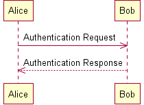

Pictures in Pages
It’s still a lot harder than it should be to add pictures to web pages. I know, you think it’s easy, but let’s do a comparison:
| Modern desktop WYSIWYG editor | WordPress (and most other tools) |
|
|
Not too bad so far, but what happens when someone wants to update the image?
| Modern desktop WYSIWYG editor | WordPress (and most other tools) |
|
|
The former feels more wiki-like, and I suspect that if sketching in web pages was as easy as sketching in Word or OpenOffice, a lot more developers would draw pictures of what’s going on in their applications.
I can see two ways forward: create drawing tools that rely on the <canvas> element that are as easy to incorporate into web pages as the Javascript WYSIWYG HTML editor I’m using right now in WordPress, or hack around the problem. Right now, it looks like the latter is winning. For example, check out Jordi Cabot’s list of text-based UML tools: all of the entries translate text like
@startuml Alice -> Bob: Authentication Request Bob --> Alice: Authentication Response @enduml
into a picture like:

just as a wiki engine takes //ohmigod!// and turns it into ohmigod!. (Example taken from PlantUML.)
Now, part of me wants to weep at the prospect of ASCII art’s continued survival. On the other hand, it’s a pretty creative way to work around the continuing backwardness of web interfaces, and if people actually start using it to explain what their code is doing and how it works, we’ll all be better off.